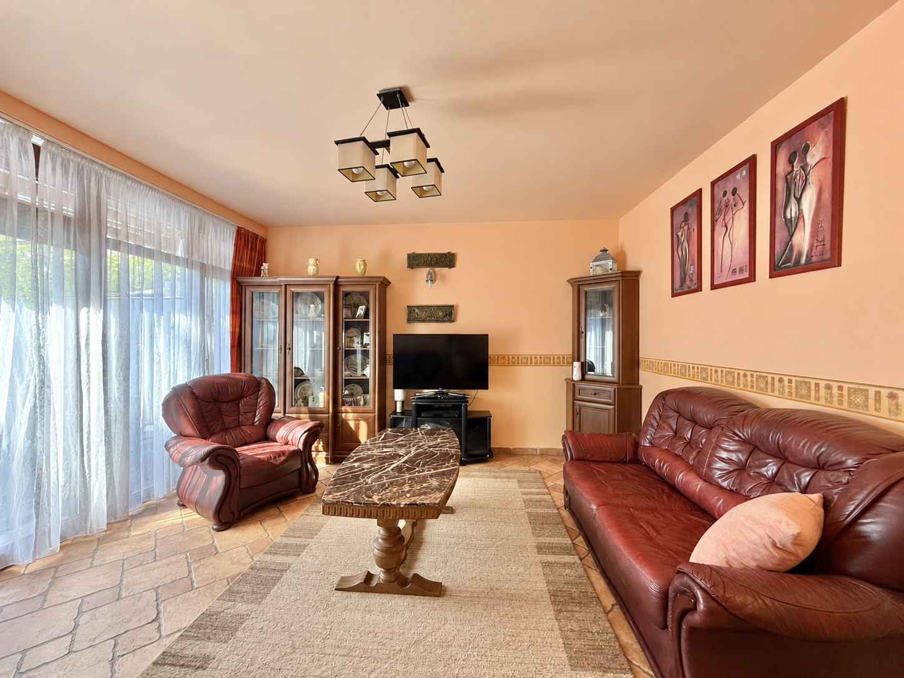

PÉCS · RÓZSADOMB
Rózsadombi
két szint.
105 m²-es, kétszintes sorházi otthon: nappali, négy hálószoba, két eltérő fürdő és két saját kertrész a hirdetés szerint.
A 2004-ben épült otthon irányára a forrásposztban 99 millió Ft. A képsor a két szint, a valódi belső lépcső és a kertek eredeti állapotát őrzi meg.

01 · MOZGÓKÉP
Rendezett képek filmje
36 másodperces film a saját, digitálisan rendezett ingatlanfotókból. Az alaprajz külön a galériában található.
02 · MODELLFILM
Földszint és kertek, majd a részletek.
48 másodperces körbejárás a saját alaprajzok és fotók alapján készült térmodellben. A nyitott földszinti áttekintést a nappali, a fakonyha, a zuhanyzós fürdő, a belső lépcső, az emeleti szobák és fürdő, majd a hátsó kert részletei követik.
Az áttekintés nyitott metszet: a takaró falak el vannak rejtve, az eredeti rögzített bútorok egy része látható marad. A közeli nézetek az eredeti szobarészleteket mutatják. Szemléltetés, nem hiteles felmérés.
02 · INTERAKTÍV TÉR
Lépj közelebb
a részletekhez.
SZEMLÉLTETŐ TÉRMODELL · NEM FELMÉRÉS
Saját, kétszintes rekonstrukció a két eredeti terv és az azonosított fotók alapján. Barna bőr ülőbútorok, klasszikus fakonyha, két valódi bevetett ágy, eltérő fürdők és ténylegesen nyitott lépcsőfödém. A fedett kerthelyen a saját fotó szerinti rattan kanapé, két karosszék és kis üvegasztal látható; a méret és a szövés szemléltető közelítés. Az üres háló üres marad.
A 3D csak indítás után töltődik be. A megjelenített állókép saját render, nem ingatlanfotó.
Egér / érintés: húzás és zoom · Billentyűzet: nyilak, + / −, Home · A részletek gombokkal is elérhetők.
03 · FOTÓGALÉRIA
Saját forrásképek
16 saját forráskép. Minden fotó szerkesztése és az alaprajzok külön besorolása láthatóan jelölt.
04 · ÁTLÁTHATÓ FORRÁSOK
Saját képek és jelölt feltételezések.
- Saját kiinduló hirdetés
- 105 m²-es, kétszintes sorházi otthon: nappali, négy hálószoba, két eltérő fürdő és két saját kertrész a hirdetés szerint. A 2004-ben épült otthon irányára a forrásposztban 99 millió Ft. A képsor a két szint, a valódi belső lépcső és a kertek eredeti állapotát őrzi meg.
- Képi források
- 16 külön, ehhez az ingatlanhoz azonosított galériakép; az eredetik változatlanul megmaradnak.
- Film és modell
- Saját, kétszintes rekonstrukció a két eredeti terv és az azonosított fotók alapján. Barna bőr ülőbútorok, klasszikus fakonyha, két valódi bevetett ágy, eltérő fürdők és ténylegesen nyitott lépcsőfödém. A fedett kerthelyen a saját fotó szerinti rattan kanapé, két karosszék és kis üvegasztal látható; a méret és a szövés szemléltető közelítés. Az üres háló üres marad.
- Forráskorlátok
- Az alsó és felső alaprajz diagramtájolása eltér; a modell a fotón megfigyelt lépcsőkapcsolat alapján igazított szemléltetés, nem felmérés. A poszt terasza 18 m², az alsó terv jelölése 6,54 m²; az eltérést nem oldottuk fel feltételezett méréssel. A garázs 21 m² a poszt szerint, csak a külső homlokzat látható. A kert foltos földes-füves állapota megmaradt. A szobaképek pontos tervhelye és az ablakok mérete részben következtetés.
- Digitális képrendezés
- Márkajelzés és alkalmi rendetlenség eltávolítása, természetes részletjavítás. A bemutató szerkesztett képeket használ; nem kitalált helyszínfotókat.